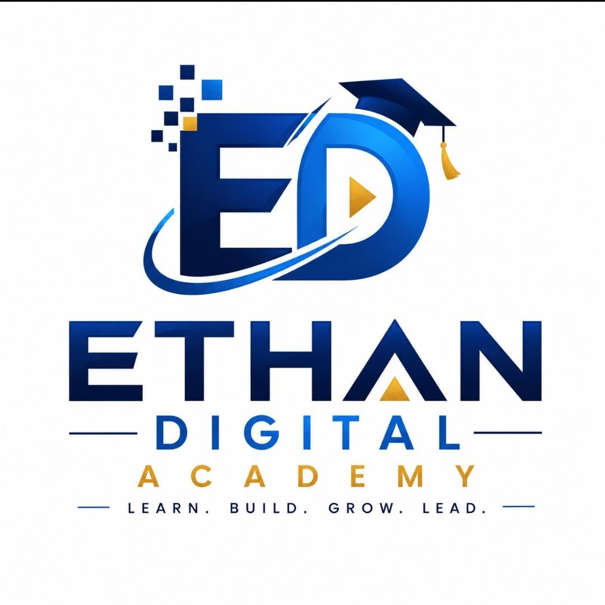

Applicant information
- Full name and contact details
- Applicant category
- Programme preference
- Learning goals and experience
- Preferred learning mode

ETHAN ADMISSIONBEFORE YOU APPLY
Use this preparation guide. Admissions will confirm the specific requirements for your programme.
Applicants under 18 should apply with a parent or guardian.
Admissions will advise whether a photograph or supporting document is needed. This preview does not upload documents.
Do not send identity documents through this preview.
Review the programme examples and identify your goals.
Complete and review your application draft.
Send the completed application via WhatsApp or email and ask admissions to confirm availability and fees.
After an official offer, follow the Academy’s payment and enrolment instructions.